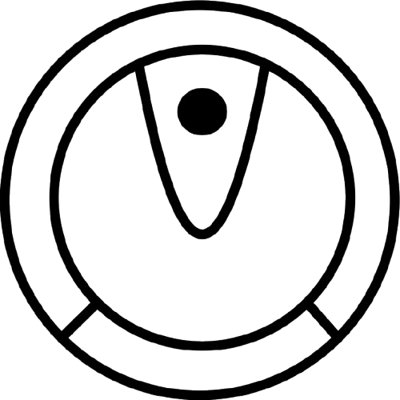

FAQ's
What is E.A.T?
E.A.T (Energy Analysis Tool) is a comprehensive application designed to monitor your energy consumption and generation. It provides real-time insights into your power usage, helping you make informed decisions to reduce energy costs and environmental impact.
How does E.A.T work?
E.A.T connects to your smart devices and energy meters to collect usage data. The application tracks consumption over time and provides easy-to-understand visualisations of your energy usage across different devices and time periods.
What benefits can I expect from using E.A.T?
• Better understand your energy consumption patterns
• Track energy usage by device and time period
• Monitor renewable energy generation (if applicable)
• View historical energy usage data
• Estimate your carbon footprint based on energy consumption
• Compare month-to-month usage trends
How accurate is the energy monitoring?
E.A.T provides highly accurate energy monitoring with a margin of error of less than 2%. Our system calibrates regularly to ensure consistent and reliable measurements. For maximum accuracy, we recommend using compatible smart plugs and devices.
Device manuals
-
Lights
Learn how to use your lights efficiently. LED lights typically use 75% less energy than traditional incandescent bulbs. E.A.T tracks total usage time and energy consumption. Average consumption: 5-15W per LED bulb. Maintenance: Replace LED bulbs every 15,000-25,000 hours of operation (approximately 10-15 years of normal use).
Troubleshooting: If a light is not working, first check if it's properly connected to power. Try toggling the switch or replacing the bulb. For flickering lights, ensure the bulb is securely screwed in. If connected smart lights are not appearing in E.A.T, try restarting the device, checking your Wi-Fi connection, or removing and re-adding the device in the app.
-
A/C
Learn how to optimise your A/C usage. Air conditioners are among the highest energy consumers in most buildings. E.A.T monitors total runtime hours and energy consumption. Average consumption: 1000-3500W while running. Maintenance: Clean or replace filters every 1-3 months, professional service check recommended annually.
Troubleshooting: If your A/C isn't cooling properly, check and clean the filters first. Ensure vents aren't blocked by furniture or curtains. If the unit freezes up, turn it off, allow it to thaw completely, and check filters. For unusual noises, schedule a professional inspection. If your A/C isn't connecting to E.A.T, check that your smart thermostat has a stable Wi-Fi connection and try resetting the connection in the app settings.
-
Speaker
Learn how to manage your speaker's energy use. While speakers consume relatively little power, standby power can add up over time. E.A.T provides data on active and standby power consumption. Average consumption: 5-50W depending on volume and model. Maintenance: Check cables for wear annually, clean dust from speaker grills every 6 months.
Troubleshooting: For no sound output, check all cable connections and ensure the correct input source is selected. If sound is distorted, reduce the volume and check for interference from nearby electronics. For wireless speakers, reset the Bluetooth connection and ensure the device is properly charged. If the speaker isn't appearing in E.A.T, try turning it off completely (not just standby) and then back on before reconnecting.
-
Projector
Learn how to optimise projector energy use. Modern projectors vary greatly in energy consumption based on brightness settings. E.A.T tracks operating hours and power usage. Average consumption: 150-300W during operation. Maintenance: Replace lamp every 1,500-5,000 hours depending on model, clean air filters every 100 hours of use.
Troubleshooting: If the projector won't turn on, check power connections and ensure the lamp door is properly closed. For dim display, the lamp may need replacement. If overheating occurs (indicated by shutdown or warning lights), clean air filters and ensure proper ventilation. For connectivity issues with E.A.T, check network settings on the projector and try reconnecting through the app's device setup process.
-
Laptop
.png)
Learn how to maximise battery life and reduce charging frequency. E.A.T tracks power consumption during different usage scenarios. Average consumption: 30-200W during charging and use, depending on workload and model. Maintenance: Clean cooling vents every 3-6 months, battery replacement typically needed every 2-4 years of regular use.
Troubleshooting: If your laptop won't charge, try a different power outlet and check the charging cable for damage. For overheating issues, clean cooling vents and use on hard surfaces rather than soft bedding. If battery drains too quickly, check for resource-intensive background processes and adjust power settings. For laptops not showing up in E.A.T, ensure the E.A.T software is installed correctly and has proper permissions to access power management data.
-
Printer
.png)
Learn how to reduce printer energy waste. Printers often consume significant power in standby mode. E.A.T measures both active and standby power usage. Average consumption: 5-10W on standby, 300-500W while printing. Maintenance: Print head cleaning every 1-2 months, replace ink/toner when indicated, professional service recommended annually for high-volume printers.
Troubleshooting: For paper jams, carefully remove stuck paper following manufacturer instructions. If print quality is poor, run the printer's cleaning cycle and check ink/toner levels. For connectivity issues, restart both the printer and Wi-Fi router, then reconnect. If the printer shows offline in E.A.T, verify it's connected to the network and not in sleep mode, then try removing and re-adding the device in the app settings.
-
Coffee Machine

Learn how to optimise your coffee routine. Coffee machines with heating elements can be energy-intensive. E.A.T records energy use during brewing and warming cycles. Average consumption: 800-1500W while brewing, 50-200W to keep warm. Maintenance: Descale every 1-3 months depending on water hardness, replace filters as recommended by manufacturer (typically every 1-2 months).
Troubleshooting: If coffee tastes bitter or machine is slow, run a descaling cycle. For leaks, check water reservoir placement and seal condition. If the machine won't turn on, check the power connection and any reset buttons. For smart coffee machines not connecting to E.A.T, restart both the coffee machine and your Wi-Fi router, then try reconnecting through the app's guided setup process.
-
Monitor
.png)
Learn how to configure energy-efficient monitor settings. E.A.T tracks power usage at different brightness levels and operating modes. Average consumption: 20-100W depending on size and brightness. Maintenance: Clean screen monthly with appropriate cleaning solution, check for dead pixels annually, typical lifespan of 5-7 years for LCD/LED monitors.
Troubleshooting: If your monitor displays no signal, check cable connections and try a different input port. For flickering screens, update display drivers and try a different cable. If colors appear incorrect, reset display settings to factory defaults. For monitors not registering in E.A.T, ensure they're connected to a smart plug that's properly set up, or check that your computer's power management software is correctly sharing data with E.A.T.
-
Server

Learn how to manage server power consumption. Servers often run 24/7 and can be significant energy consumers. E.A.T provides detailed energy usage data across different operational periods. Average consumption: 300-1000W+ depending on configuration and workload. Maintenance: Dust removal every 3-6 months, check and replace failing hard drives as needed, verify cooling system functionality monthly.
Troubleshooting: For server overheating, check cooling fans and clean dust from air intakes. If experiencing unexpected shutdowns, check power supply units and system logs for errors. For unusual noises, investigate fans and hard drives for failure. If the server isn't reporting to E.A.T properly, check that the server's power monitoring agent is running and that all required network ports are open for communication with the E.A.T platform.
-
Electric Hoover
Learn how to schedule efficient cleaning cycles. Robotic vacuums consume relatively little power but require regular charging. E.A.T tracks charging cycles and operating times. Average consumption: 30-90W while cleaning, 10-20W while charging. Maintenance: Empty dust bin after each use, clean brushes weekly, replace filters every 2-3 months, battery replacement typically needed every 2 years.
Troubleshooting: If your robot vacuum won't charge, clean the charging contacts on both the device and dock. For poor cleaning performance, check and clean brushes and wheels. If the device gets stuck frequently, clear obstacles and use virtual barriers if available. For connectivity issues with E.A.T, ensure the device has a strong Wi-Fi signal where it docks and try resetting the connection in the app settings.
Licenses and Credits
Project License
This project is licensed under the following licenses:
MIT License
Copyright (c) 2025 Pear Care Inc.
Permission is hereby granted, free of charge, to any person obtaining a copy of this software and associated documentation files (the "Software"), to deal in the Software without restriction, including without limitation the rights to use, copy, modify, merge, publish, distribute, sublicense, and/or sell copies of the Software, and to permit persons to whom the Software is furnished to do so, subject to the following conditions:
The above copyright notice and this permission notice shall be included in all copies or substantial portions of the Software.
THE SOFTWARE IS PROVIDED "AS IS", WITHOUT WARRANTY OF ANY KIND, EXPRESS OR IMPLIED, INCLUDING BUT NOT LIMITED TO THE WARRANTIES OF MERCHANTABILITY, FITNESS FOR A PARTICULAR PURPOSE AND NONINFRINGEMENT. IN NO EVENT SHALL THE AUTHORS OR COPYRIGHT HOLDERS BE LIABLE FOR ANY CLAIM, DAMAGES OR OTHER LIABILITY, WHETHER IN AN ACTION OF CONTRACT, TORT OR OTHERWISE, ARISING FROM, OUT OF OR IN CONNECTION WITH THE SOFTWARE OR THE USE OR OTHER DEALINGS IN THE SOFTWARE.
CC0 1.0 Universal
CREATIVE COMMONS CORPORATION IS NOT A LAW FIRM AND DOES NOT PROVIDE LEGAL SERVICES. DISTRIBUTION OF THIS DOCUMENT DOES NOT CREATE AN ATTORNEY-CLIENT RELATIONSHIP. CREATIVE COMMONS PROVIDES THIS INFORMATION ON AN "AS-IS" BASIS. CREATIVE COMMONS MAKES NO WARRANTIES REGARDING THE USE OF THIS DOCUMENT OR THE INFORMATION OR WORKS PROVIDED HEREUNDER, AND DISCLAIMS LIABILITY FOR DAMAGES RESULTING FROM THE USE OF THIS DOCUMENT OR THE INFORMATION OR WORKS PROVIDED HEREUNDER.
CC0 1.0 Universal Public Domain Dedication
The images titled "server icon.png" and "server icon-inverted.png" are used under the CC0 1.0 Universal (Public Domain Dedication) license.
Images under MIT are from the following sites:
CSS vol.2 pack
Ionicons icon pack
Phosphor Regular Vol.4 icon pack
Phosphor Thin icons
Ionicons Outline Vol.2 icon pack
Ionicons Fill Vol.2 icon pack
Images that are licenced under MIT include:
How do I...
...connect my devices to E.A.T?
To connect compatible devices, navigate to the "Add device's" button ' ' section in the nav bar then you can add a new device to each room or even add a new room.
' section in the nav bar then you can add a new device to each room or even add a new room.
...track my energy generation?
If you have solar panels or other renewable energy sources, go to the "power stats" tab ' ' from the nav bar then you can view the overall energy generation for your office's energy generation methods.
' from the nav bar then you can view the overall energy generation for your office's energy generation methods.
...create energy usage reports?
From the side nav bar, select the "settings" icon ' ' and then "Export data". This should download a CSV file of your data generation.
' and then "Export data". This should download a CSV file of your data generation.